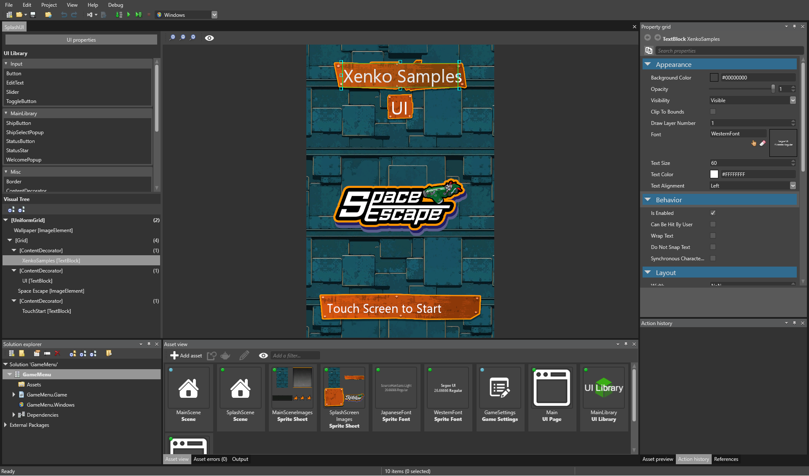

UI
Stride には、洗練されたユーザーインターフェースを構築するための UI エディターとレイアウトシステムが搭載されています。解像度には依存せず、2D と 3D に対応しています。

Stride では、UIPageAsset と UILibraryAsset という 2 種類の UI アセットを使います。ランタイムでは、それぞれ UIPage と UILibrary に対応します。
描画の呼び出し回数を減らすために、Stride は複数の要素をスプライト バッチ レンダラーで描画します。
コントロール
Stride には、以下のような多くの UI コントロールコンポーネントが搭載されています。
- ImageElement
- ContentControl
- TextBlock
- EditText (displays soft keyboard on mobile devices)
- Panel
- StackPanel (supports virtualization)
- Grid
- UniformGrid
- Canvas
- ScrollBar
- ModalElement
自分で作成することも可能です。
サンプルプロジェクト
スクリプトがなければ、UI は単なる画像です。これをインタラクティブ（対話的）にするには、スクリプトを追加します。
Stride で実装されている UI の例として、Stride に同梱されている game menu UI サンプルがあります。